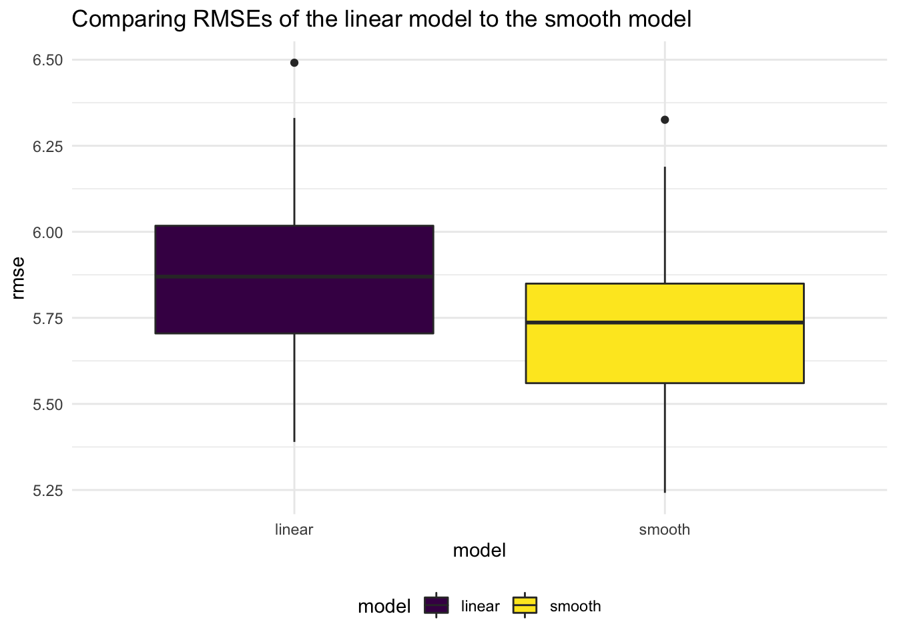
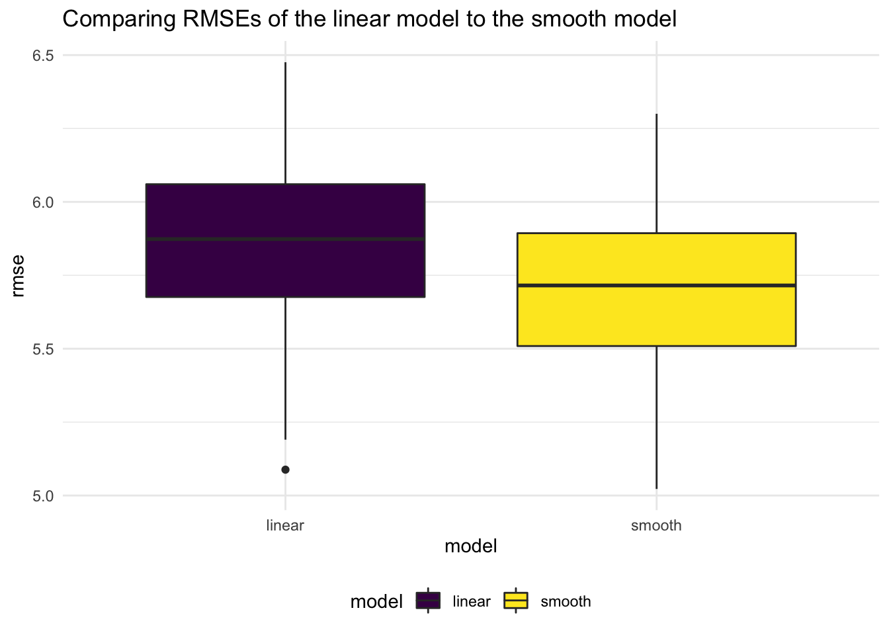
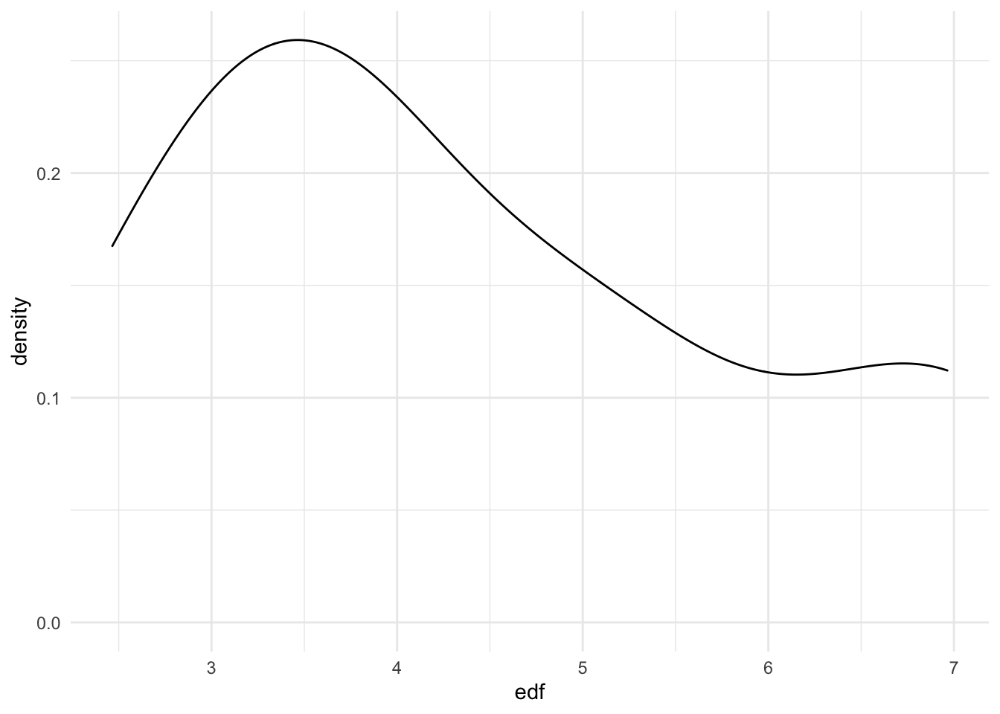

weather_lm
Binyam Yilma
12/3/2020
Import data
crash_dat = read_csv("./data/crash_dat.csv")Subset crash_dat
df = crash_dat %>%
select(collision_id, date, year, month, day, crash_time, borough, number_of_persons_injured, number_of_persons_killed, vehicle_options, dow, ny_prcp, ny_tmax, ny_tmin) %>%
group_by(date) %>%
summarize(
n_incidents = n(),
n_injured = sum(number_of_persons_injured),
n_killed = sum(number_of_persons_killed),
ny_tmin,
ny_tmax,
ny_prcp
) %>% distinct() ## `summarise()` regrouping output by 'date' (override with `.groups` argument)# drop_na(borough)
# arrange(desc(n_injured))Create a cross valdiaton dataset
cv_df =
crossv_mc(df, 100)
cv_df = cv_df %>%
mutate(
train = map(train, as_tibble),
test = map(test, as_tibble)
) Fit different models on the train dataset
cv_df = cv_df %>%
mutate(
linear_mod = map(.x = train, ~lm(n_incidents ~ ny_prcp + ny_tmin + ny_tmax, data = .x)),
smooth_mod = map(.x = train, ~gam(n_incidents ~ s(ny_tmax) + s(ny_tmin) + s(ny_prcp), data = .x))
) %>%
mutate(
rmse_linear = map2_dbl(.x = linear_mod, .y = test, ~rmse(model = .x, data =.y)),
rmse_smooth = map2_dbl(.x = smooth_mod, .y = test, ~rmse(model = .x, data =.y))
)plot RMSE’s to compare the different models
cv_df %>%
select(starts_with("rmse")) %>%
pivot_longer(
everything(),
names_to = "model",
values_to = "rmse",
names_prefix = "rmse_"
) %>%
ggplot(aes(x = model, y =rmse, fill = model)) +
geom_boxplot() +
labs(
title = "Comparing RMSEs of the linear model to the smooth model"
)
fit a smooth model - n_incidents on ny_prcp + ny_tmin + ny_tmax
#multiple regression under normal assumptions
gam(n_incidents ~ s(ny_tmax) + s(ny_tmin) + s(ny_prcp), data = df) %>%
broom::tidy() ## # A tibble: 3 x 5
## term edf ref.df statistic p.value
## <chr> <dbl> <dbl> <dbl> <dbl>
## 1 s(ny_tmax) 3.79 4.81 13.3 4.71e-12
## 2 s(ny_tmin) 4.29 5.38 5.74 1.95e- 5
## 3 s(ny_prcp) 4.05 5.00 20.7 5.71e-20df %>%
ggplot(aes(x = ny_tmax, y = n_incidents)) +
geom_point()## Warning: Removed 24 rows containing missing values (geom_point).
df %>%
ggplot(aes(x = ny_tmin, y = n_incidents)) +
geom_point()## Warning: Removed 24 rows containing missing values (geom_point).df %>%
ggplot(aes(x = ny_prcp, y = n_incidents)) +
geom_point()## Warning: Removed 24 rows containing missing values (geom_point).Bootstrapping using modelr
df_boot_results = df %>%
bootstrap(100, id = "strap_number") %>%
mutate(
strap = map(strap, as_tibble),
models = map(.x = strap, ~gam(n_incidents ~ s(ny_tmax) + s(ny_tmin) + s(ny_prcp), data = .x)),
results = map(models, broom::tidy)
) %>%
select(strap_number, results) %>%
unnest(results) smooth_model = df_boot_results %>%
group_by(term) %>%
summarize(
mean_est = mean(edf),
sd_est = sd(edf)
)## `summarise()` ungrouping output (override with `.groups` argument)#under repeated sampling, using bootstrap, we see that the distribution of our estimate is skewed
df_boot_results %>%
filter(term == "s(ny_prcp)") %>%
ggplot(aes(x = edf)) +
geom_density()
#cosntructing confidence intervals based on bootsrap confidence intervals
df_boot_results %>%
group_by(term) %>%
summarize(
ci_lower = quantile(edf, 0.025),
ci_upper = quantile(edf, 0.975)
)## `summarise()` ungrouping output (override with `.groups` argument)## # A tibble: 3 x 3
## term ci_lower ci_upper
## <chr> <dbl> <dbl>
## 1 s(ny_prcp) 2.34 8.51
## 2 s(ny_tmax) 1.00 8.21
## 3 s(ny_tmin) 2.62 7.51#making a prediction plot of the smooth model estimates (edf)
smooth = gam(n_incidents ~ s(ny_tmax) + s(ny_tmin) + s(ny_prcp), data = df)
df %>%
add_predictions(smooth) %>%
ggplot(aes(x = date, y = n_incidents)) +
geom_point() +
geom_smooth(aes(y = pred)) +
labs(
title = "Actual Number of Incidents + Predicted Number of Incidents",
x = "Date",
y = "Number of Incidents"
)## `geom_smooth()` using method = 'gam' and formula 'y ~ s(x, bs = "cs")'## Warning: Removed 24 rows containing non-finite values (stat_smooth).